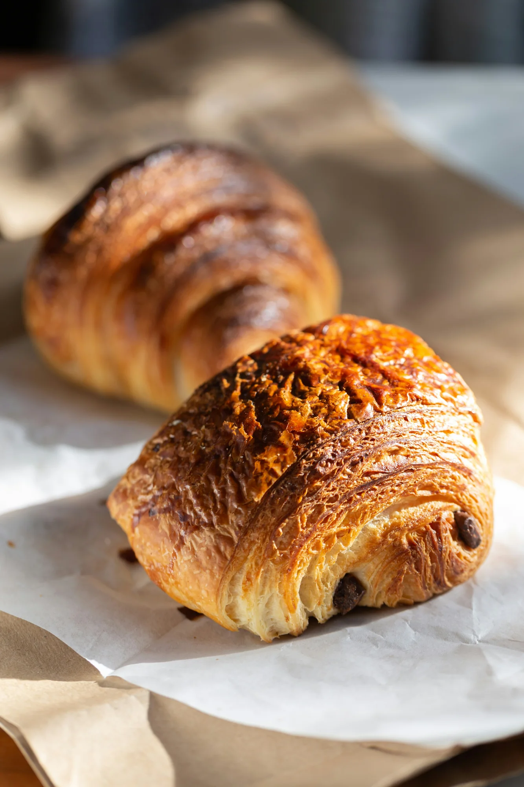
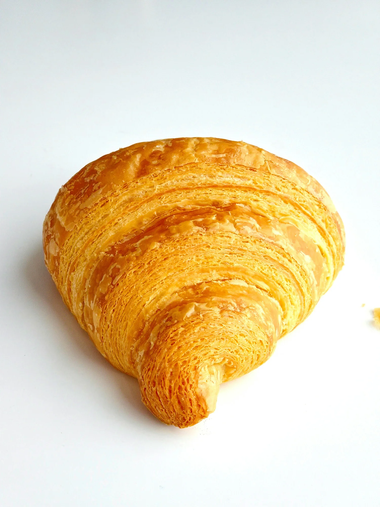
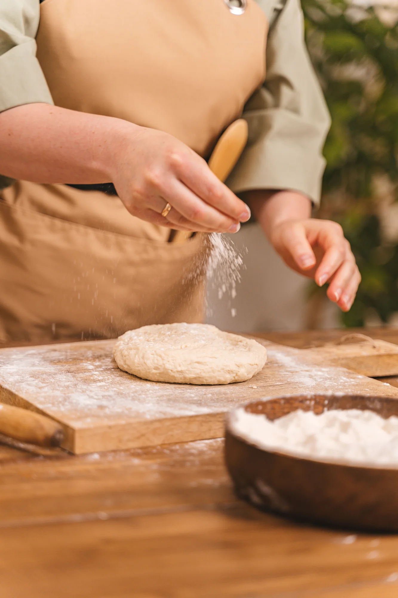

↗Butter croissant
Shatteringly crisp outside, soft and honeycombed within.
BAKED WITH PATIENCE · BAHAWALPUR
A little flour, a lot of feeling. Discover slow-fermented sourdough, delicate pastries and the everyday pleasure of something made by hand.


FIG. 01 — THE CRAFTA MORE THOUGHTFUL KIND OF BAKERY
We believe the best things cannot be rushed. Our dough rests overnight, our pastry is folded by hand, and every batch gets the attention it deserves.
Maison Levain is an independent bakery concept built around honest ingredients, time-honoured techniques and the simple joy of gathering around good food.
A little about us →A NOTE FROM OUR KITCHEN
“The secret ingredient is never a secret. It’s time.”THE MAISON LEVAIN WAY
FROM STARTER TO TABLE
A few good ingredients. A little patience. A whole lot of care.
Thoughtfully sourced flour, real butter and ingredients we can stand behind.
Long fermentation develops flavour, texture and character naturally.
We bake in small batches, so the best part is always just around the corner.
YOUR NEXT GOOD MORNING